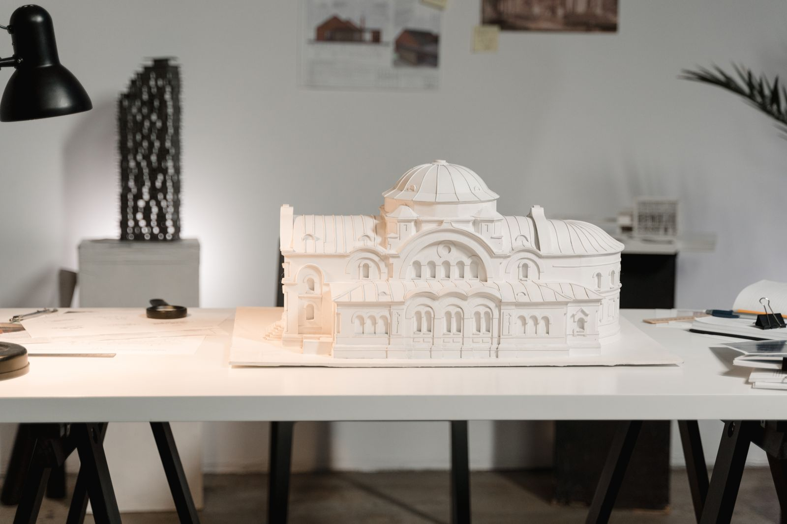
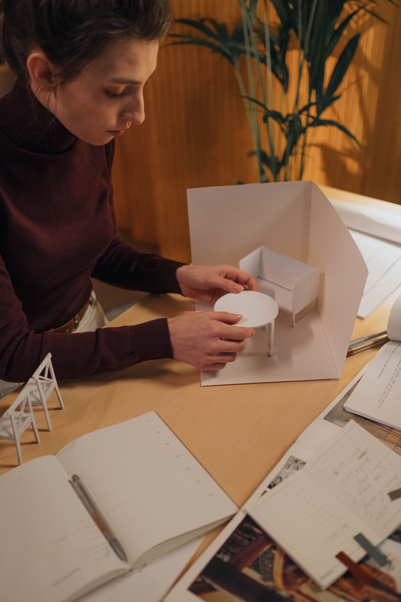
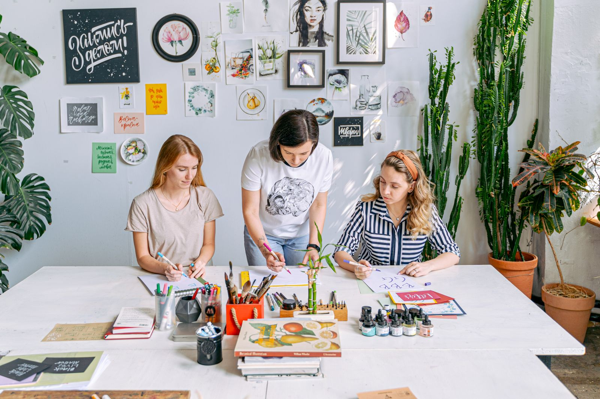
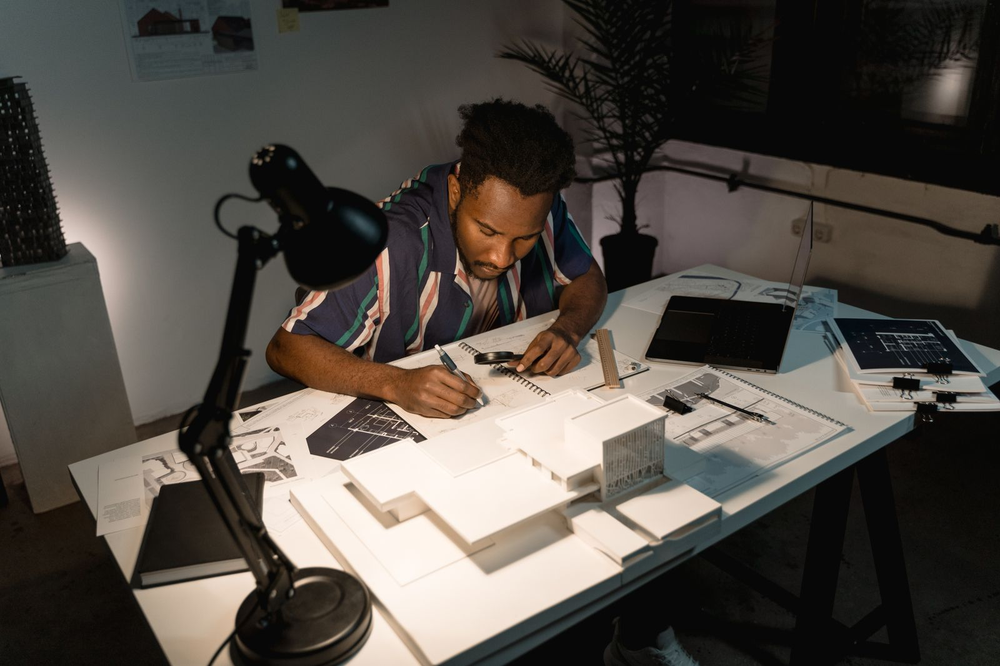
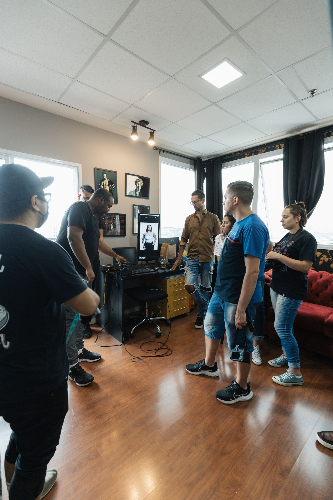
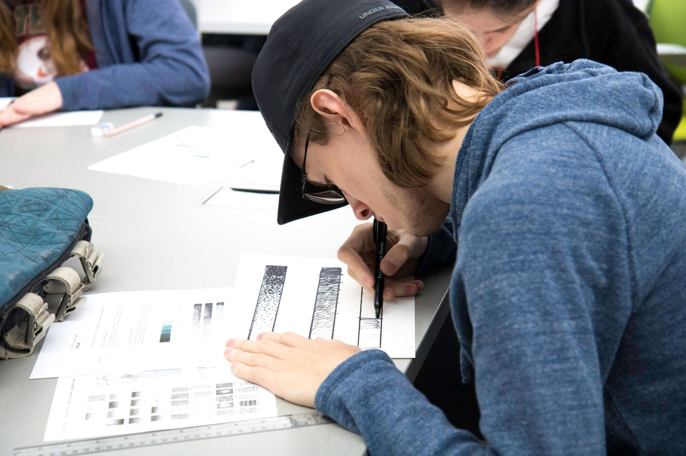

对照院校、UCAS、教育部等一手页面，写清选校、费用、作品集和申请节奏，也继续讨论AI Agent、vibe coding和应用开发。

价格指南把RISD、ArtCenter和CMU的学费、生活预算与项目口径放在一起，算清申请前真正要准备的资金。

留学选校从教育部平台出发，逐项核对批准书、招生年份、所发证书和培养路径，再决定项目是否适合自己。
 AI产品
AI产品
从真实任务、工具与数据接入、人工确认和失败路径出发，判断第一版智能体产品应该做到哪里。
 AI产品
AI产品
按范围、真实数据、登录权限、安全、测试、部署与维护逐项检查，保留已经验证的原型价值。
 AI产品
AI产品
比较验证速度、数据权限、外部集成、代码所有权和维护成本，按产品阶段选择路线。
 English
English
A complete English guide to project selection, process evidence, page editing, timelines and portfolio review.

作品集UAL、RCA、UCL Bartlett与RISD要求逐条核对，讲清页数、过程稿、项目选择、AI使用说明与提交方式。
留学选校按UCAS官方日期倒排作品集、文书和语言准备，也解释UAL收到作品集邀请后常见的短提交窗口。

作品集从UCL Bartlett当前10页、5MB规则出发，讲清项目筛选、过程页、非建筑作品与逐页编辑方法。
留学选校从课程长度、官方费用、申请入口和毕业后安排出发，找到适合自己专业目标与预算的国家。
 价格指南
价格指南
把项目数量、指导深度、修改边界和交付责任拆开，判断一份报价到底买到了什么。
作品集先查正式截止日和提交窗口，再给选题、研究、制作、排版与检查留出各自的时间。

留学选校从案例原始过程、导师匹配、合同边界到试课反馈，逐项验证一家机构是否适合你的方向。

作品集围绕观察、研究、试验和结果组织项目，让评审看见设计决定是怎么一步步形成的。
该分类暂无文章，敬请期待。
作品集从方法、案例与诊断开始。AI产品可以先看MVP服务范围，再带着原型或需求沟通。